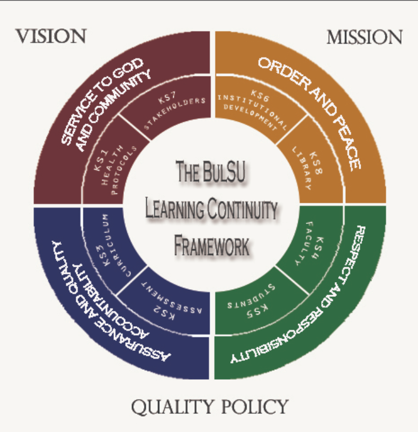
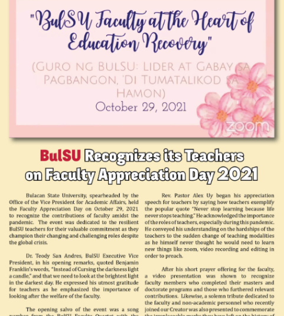
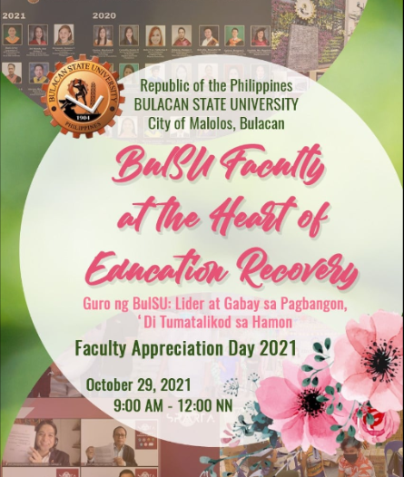

EXECUTIVE SUMMARY
The COVID-19 pandemic has fundamentally reshaped educational landscapes worldwide. While the initial focus may have been on immediate response and crisis management, a forward-looking approach is now crucial. The Updated Learning Continuity Plan (LCP) 2024 for Bulacan State University (BulSU) serves this purpose by acknowledging the ongoing nature of the pandemic and the need for an adaptable and resilient educational framework.
The Learning Continuity Plan (LCP) at Bulacan State University has been updated due to several critical factors. The ongoing COVID-19 pandemic, with its persistent variants, continues to pose challenges, necessitating that the LCP reflects the latest public health guidelines and remains adaptable to potential future disruptions.
The Updated LCP 2024 should build upon the successes of the previous plan while addressing identified shortcomings. By acknowledging the ongoing impact of the pandemic, the need to address learning gaps, and the potential of new technologies, the Updated LCP 2024 positions the university to deliver a robust and adaptable educational experience.
Revised LCP 2024:
View Document
The unprecedented challenges brought about by COVID-19 became a testing ground on what the BulSU community can do to become more resilient and is manifested in their will to continually embrace her core values. BulSU positively responded to the challenges brought about by the crisis and to the issues that learning must continue. BulSU rose above these challenges and took this as an opportunity to be more enthusiastic about continuing our mission.
As we continuously do our best to mitigate the effects of the crisis and make plans to deliver what is expected of us for the good of our students, there are other measures to consider to impeccably say that the University is winning and is delivering sustained outcomes. BulSU stepped up and had phenomenal experiences and learnings that became fresh challenges that made us stronger and cohesive in creating possibilities and opportunities.
Holding to BulSU’s mission of providing high-quality instruction, research, and extension, despite the prolonged effects of the pandemic, the Educational Development Office under the Office of the Vice President for Academic Affairs has updated BulSU’s Learning Continuity Plan for the school year 2022–2023, holding on to the adherence of its original key strategies as follows:
The Updated BuLSU LCP shall adhere to the following key strategies:
INTRODUCTION
The COVID-19 pandemic has produced challenges for the country’s educational system that brought uncertainties that nobody thought would happen. Like most organizations, educational institutions are not exempted to the threats and challenges of doing their mandates in today’s complex and tough situation. The President has ordered institutions to cease face-to-face instruction that require them to switch to unconventional modalities of teaching and learning such as blended and flexible learning which include online teaching and virtual education.
As the COVID-19 pandemic continues and while the government and health officials are doing their best to slow down the outbreak, the education systems must not stop and provide quality education. Though learning has been disrupted, it still has to continue.
It is within this context that Bulacan State University, with its mandate as a knowledge-generating institution, reaffirms its commitment to the educational principle of learning continuity amidst any kind of disturbances.
LEARNING CONTINUITY DEFINED
Continuity of learning is the continuation of education in the event of a prolonged school closure or student absence. It is a critical component of school emergency management, as it promotes the continuation of teaching and learning despite circumstances that interrupt normal school attendance for one or more students.
In higher education, institutional continuity is a complex combination of strategies and activities. Business continuity plans detail the organizational patterns of adjustment and accommodations necessary to sustain all areas of a college or university in a disaster and post-disaster environment. Student life, facilities, financial activities, security and infrastructure are addressed along with the academic mission of an institution.
With the prolonged declaration of community quarantine and the directive of the president that there will be no face-to-face meetings, the whole community of Bulacan State University, together with its administrators, faculty and personnel made a commitment to produce a growing body of useful resources to support the continuity of student learning and well-being during school closures. The University will continue to look and provide for flexible ways to mend the loss caused by pandemic’s interruptions to learning trajectories and guarantee a smooth transition and implementation of the new normal set up of flexible remote learning.
THE CONTINUITY OF LEARNING IN BulSU’s CONTEXT:
Providing continuity of learning is important when unexpected events happen. It is imperative to every educational institution to continue despite the complications. As a University and amidst the pandemic, BulSU is holding on its prime goal to provide education that is accessible to deserving and qualified students through internationally-recognized and industry-responsive programs set in a 21st century learning environment.
As we rise to this challenge as an educational institution, Bulacan State University upholds its Vision, Mission and Goals. Whatever actions were planned and implemented is anchored on its Quality Policy and Core Values.
Vision
Bulacan State University is a progressive knowledge-generating institution globally recognized for excellent instruction, pioneering research, and responsive community engagements.
Mission
Bulacan State University exists to produce highly competent, ethical and service-oriented professionals that contribute to the sustainable socio-economic growth and development of the nation
Core Values
S - Service to God and Community
O - Order and Peace
A - Assurance of Quality and Accountability
R – Respect and Responsibility
Quality Policy
We at Bulacan State University (BulSU) are committed to provide excellent instruction, research and extension services.
We shall implement an internationally recognized management system in all aspects of our operations, processes and services in line with our commitment and in achieving our objectives.
To continually improve our quality performance and the effectiveness and suitability of our quality management system, we shall:
What will be presented here as the BulSU Learning Continuity Plan is being anchored in all of these and will uphold and adhere for the overall direction to ensure that it continuously provides quality education.
Bulacan State University, in its desire for learning continuity is confident its students have the abilities to carry on their learning journey and shall gain the support of our whole community together with all of the stakeholders as the university adapts to this unprecedented situation. We will uphold the attainment of the BulSU Ideal Graduates Attributes (BIG A) that reflect the graduates’ capacity as: a) highly and globally competent; b) ethical and service-oriented citizen; c) analytical and critical thinker; and d) reflective life-long learner.
Given the vast array of experiences that BulSU have gone through the years, together with the proven and instilled resiliency in our organization, we are confident enough that we will make it to reach our commitment to provide quality, relevant and holistic education to our students with the implementation of the Learning Continuity Plan for the AY 2020-2021.
Bulacan State University is presenting this Resiliency and SOARing Incessantly: The BulSU Learning Continuity Plan to be a guide to the whole University in adapting to the changes that are brought by the pandemic and in the implementation of the guiding principles and policies.
The following questions were considered in crafting this Learning Continuity Plan which the answers were found by the University to be suited in our context and needs:
The Resiliency and SOARing Incessantly: The BulSU Learning Continuity Plan shall adhere to the following key strategies in this time of pandemic:

Figure 1. BulSU LCP Framework
The framework depicts that the LCP is anchored on the mission, vision, and quality policy of the University. On the other hand, the LCP is instrumental to realize her vision, accomplish the mission and implement her quality policy. The Key Strategies are based on the University’s core values with acronym of SOAR by which the institution is and will incessantly inculcate to her administrators, faculty, personnel and most specially to her beloved students who will become leaders and supporters of advocacies to help transform society. Thus, it can be said that BulSU’s environment nurtures every individual under her wings and HAND-IN-HAND THEY WILL SOAR TOGETHER.
Hence this new set of guidelines in implementing flexible learning to be known as the Guidelines on the Hybrid Flexible (Hyflex) Learning Modalities at Bulacan State University which includes Blended Learning (BLearn), Asynchronous Online Learning (AOL), Small Private Online Courses (SPOC), and Traditional Learning Approach (TLA) as modes of learning is now presented:
3.1 The Blended Learning (BLearn) - Required to Laboratory Courses
Blended learning brings together the best of both worlds: traditional face-to-face classroom training and online learning (ELM Learning, 2022). BLearn in the University allows the students to attend on-campus classes once a week while for their Laboratory classes and asynchronous online learning (AOL) for their lecture units. Interaction of students with the learning materials will be in flipped learning approach.
Flipped Learning is a pedagogical strategy in which direct instruction changes from a group to an individual learning environment (Flipped Learning Network, 2014). Flipped learning is an approach of blended learning wherein all the materials are given to the students ahead to prepare themselves for the on-campus classroom activities.
In BLearn, the lecture part of the course will be in a flipped learning approach wherein students will have an advanced reading of the materials as preparation for their laboratory classes. BLearn could be offered to courses with laboratory and other activities that require the physical presence of the students. The College will decide which courses will be under the BLearn modality.
3.2 The Asynchronous Online Learning (AOL) – Required to purely lecture/theory subjects
Asynchronous learning allows students to learn on their own time and in a set amount of time (Scheiderer, 2020). This modality which is being implemented during the pandemic will continue to be retained but with a modification.
The practice of AOL is to provide learning materials for the students to study in advance. Online meetings are scheduled twice a month where attendance is required for them to get some additional information, clarification, and feedback from their instructors.
The major assessment of the course but not limited to summative assessments, hands-on activities, midterm and final written examinations will be done during on-campus meetings.
3.3 The Hyflex-SPOC (Small Private Online Courses) – Option to the students with special cases
The Hyflex-SPOC are digital learning platforms that offer unique and easy-to-access educational possibilities (Ramakrishnan, 2021). These are online lessons that are only available to officially enrolled students at the University with special cases.
In Hylex-SPOC, the students are not required to meet their instructor online but have to be diligent in accessing learning materials and submitting tasks online.
3.4 Traditional Learning Approach 2 (TLA 2) - Option to the students who experienced difficulties during online distance learning
Traditional learning approach is an option that caters to those students who encountered difficulties during online distance learning. This modality will allow the students to go to the University on their official scheduled time of classes.
Since students experienced challenges in online distance learning the use of MS Teams as the official education platform of the University will not be required to the students.
Please click the link to view the BulSU Learning Continuity Plan Matrix:
*BulSU LCP was made thru the efforts of the Office of the Vice President for Academic Affairs

